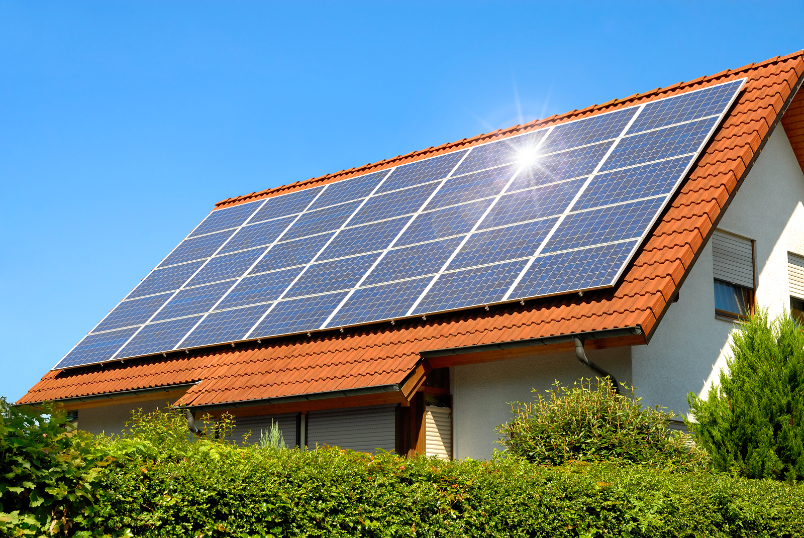

Bienvenido al futuro energético
El futuro de las energías renovables se perfila como uno de los pilares fundamentales para el desarrollo sostenible del planeta. A medida que los recursos fósiles se agotan y los efectos del cambio climático se intensifican, las fuentes limpias como la solar, eólica, hidroeléctrica y geotérmica emergen como alternativas viables y necesarias. Gracias a los avances tecnológicos y a un creciente compromiso global por reducir las emisiones de carbono, las energías renovables no solo representan una solución ecológica, sino también una oportunidad económica y social para transformar la forma en que producimos y consumimos energía.